Your direction: the gear and the drive mode are too prominent in the middle. Both change rarely and are a secondary reading, so they move to the bottom right.
Every shot passes the margin check (capture.js: 16 shots).
Pick: B, locked (2026-10-30). The gear and the drive mode sit in the bottom-right corner.
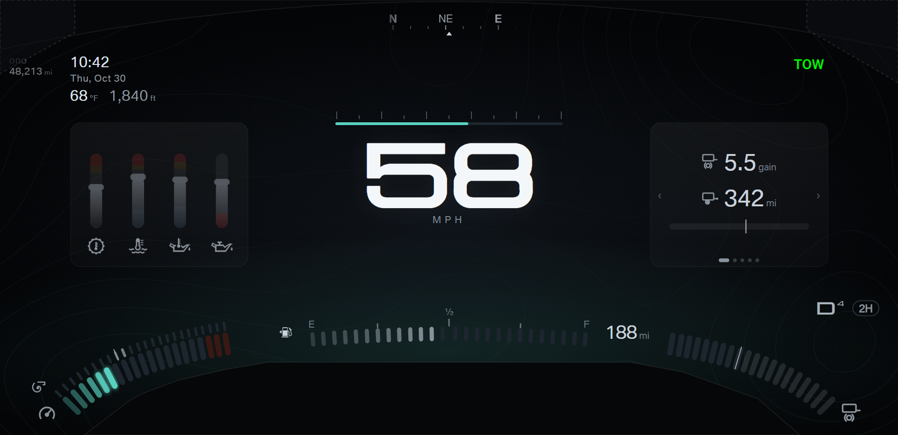
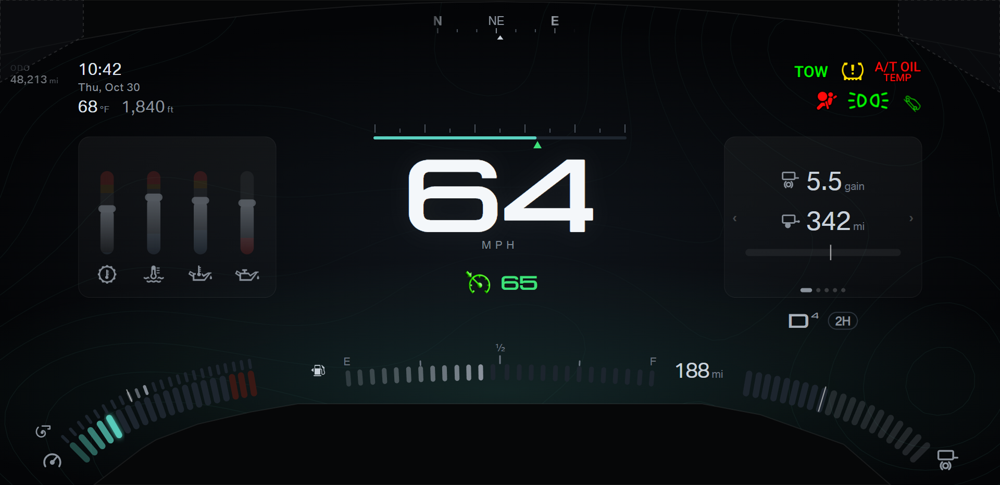
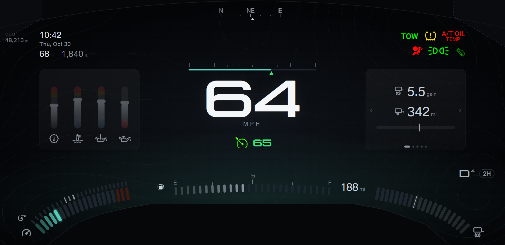
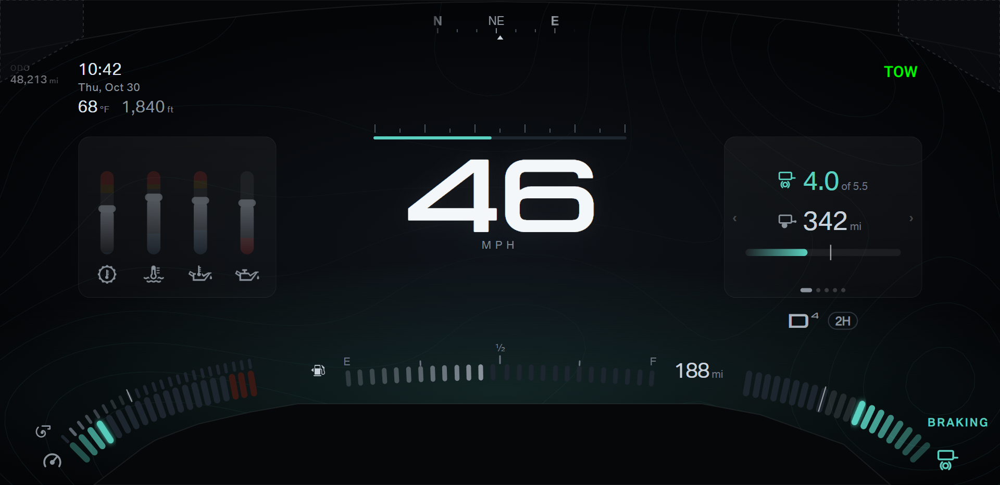
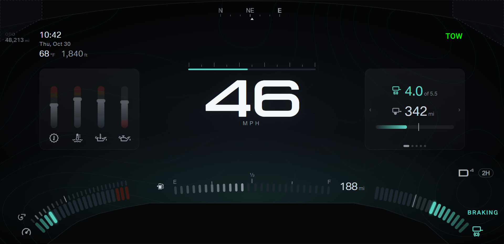
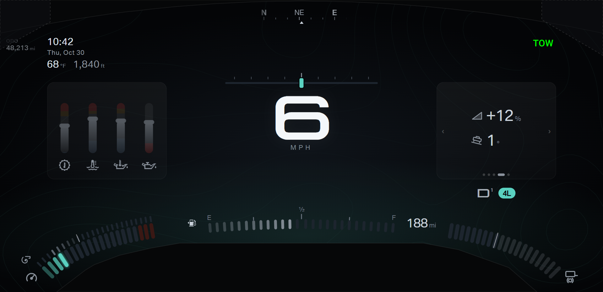
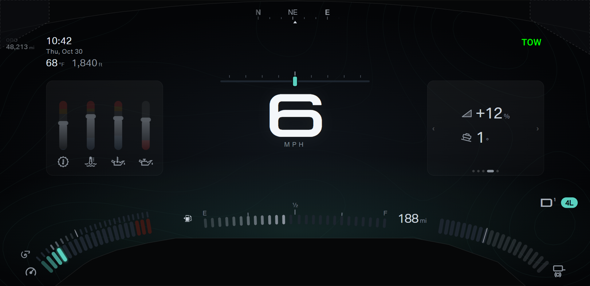
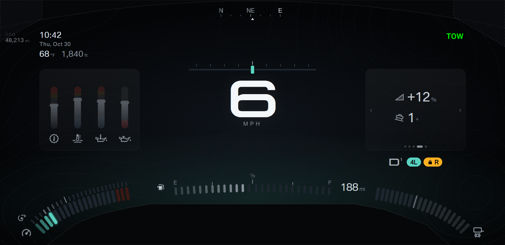
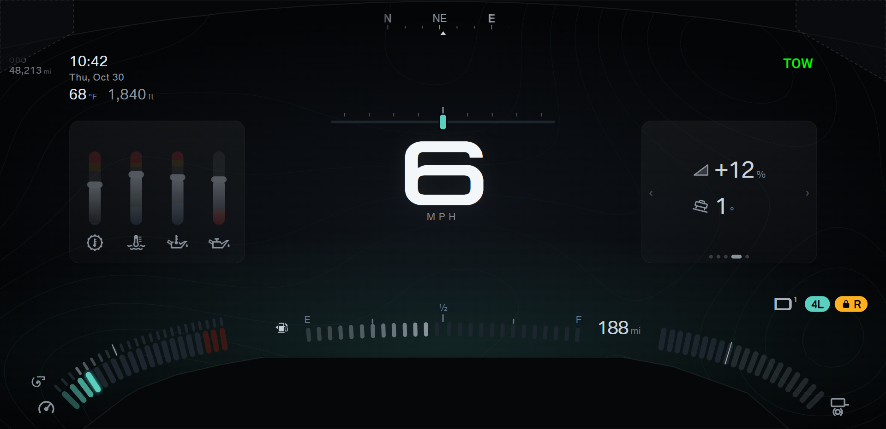
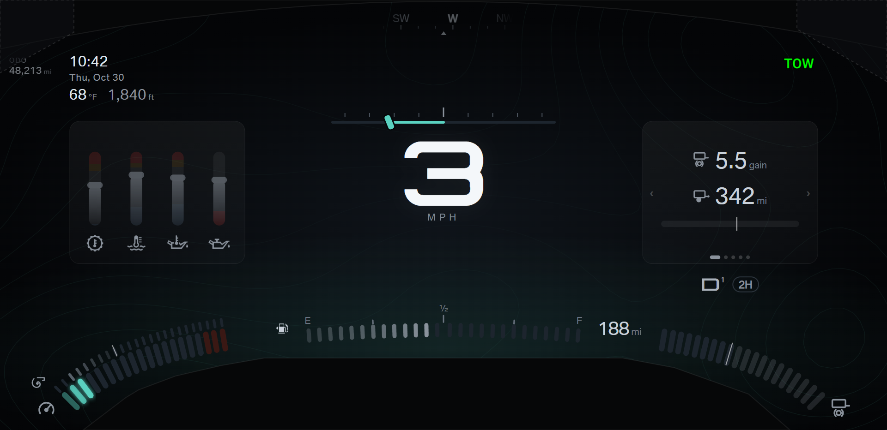
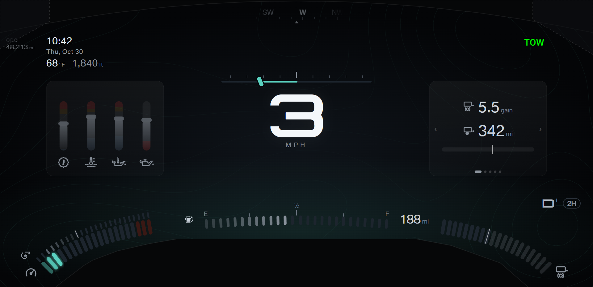
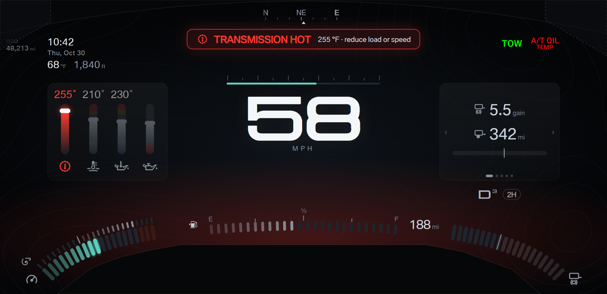
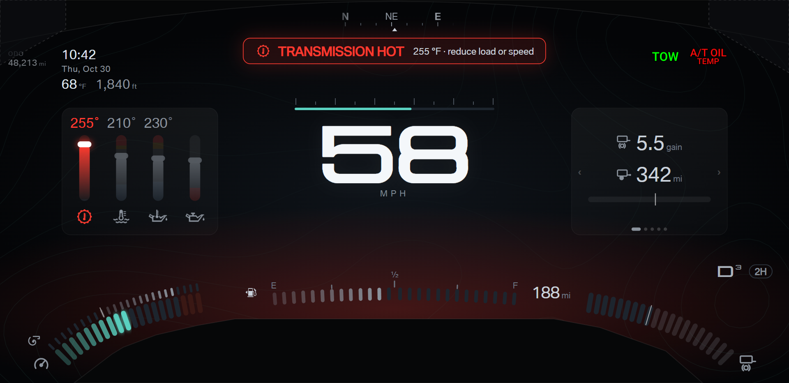
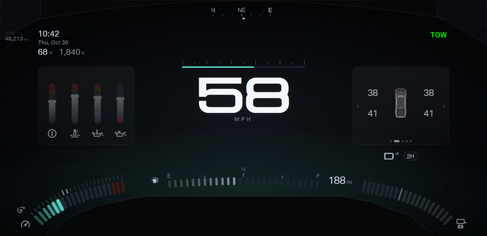
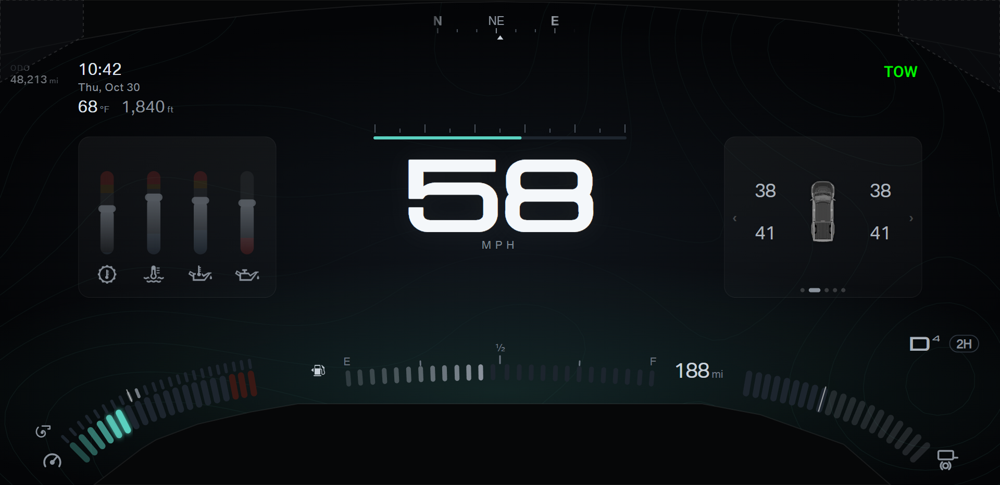